Real-time semantic mapping for autonomous off-road navigation
한줄 요약 — 오프로드 ATV의 RGB 영상을 경량 FCN으로 분할하고 64선 LiDAR의 높이·자유공간 정보와 400×400 로봇 중심 격자에서 시간 융합하여, 길·풀·식생·장애물의 의미 비용으로 후보 궤적을 선택한 실시간 폐루프 주행 시스템이다. 다만 희소 클래스 오인식과 10 Hz 지도 갱신이 고속 주행의 병목이다.
1.연구 배경 및 동기
기하적으로 닮았지만 주행 의미는 다른 오프로드 지형
LiDAR와 INS/GPS가 주는 기하 구조만으로 도로 밖을 주행하면, 센서가 본 높이나 거칠기가 차량이 실제로 통과할 수 있는지를 충분히 설명하지 못한다. 큰 풀은 기하 지도에서 장애물처럼 솟아 보이지만 ATV가 통과할 수 있고, 낙엽은 돌밭처럼 보이며, 웅덩이는 구멍 또는 매끈한 면으로 나타날 수 있다. 저자들은 이런 의미적 모호성이 단순한 비효율을 넘어 위험한 경로 선택으로 이어진다고 보고, 높이와 주행 관련 클래스를 한 지도에 담는 문제를 설정했다.
목표는 RGB 영상의 픽셀별 의미와 LiDAR의 3차원 측정을 온라인으로 결합해 차량 주변의 로봇 중심 2.5D 지도를 계속 갱신하는 것이다. 지도 셀은 최소·최대 높이뿐 아니라 trail, grass, vegetation, obstacle 같은 클래스를 보유하며, 경로계획기는 이 셀들의 의미 비용을 직접 합산한다. 따라서 인식 정확도만 따로 평가하는 데 그치지 않고, 실제 ATV가 지도 갱신과 경로 선택을 폐루프로 반복하는 전체 시스템이 연구 대상이다.
논문은 Carnegie Mellon과 Yamaha의 상용 ATV 개조 플랫폼에서 수행됐다. 64선 Velodyne LiDAR, 21 cm 베이스라인 RGB 스테레오 카메라, INS/GPS를 탑재했지만 스테레오 깊이는 사용하지 않았고, 두 대의 상용 노트북과 NVIDIA GT980M GPU에서 ROS 노드로 실행했다. 이는 의미 분할, 공간 투영, 지도 융합, 계획이 실제 온보드 계산 제약 안에서 맞물려야 한다는 설계를 강조한다.
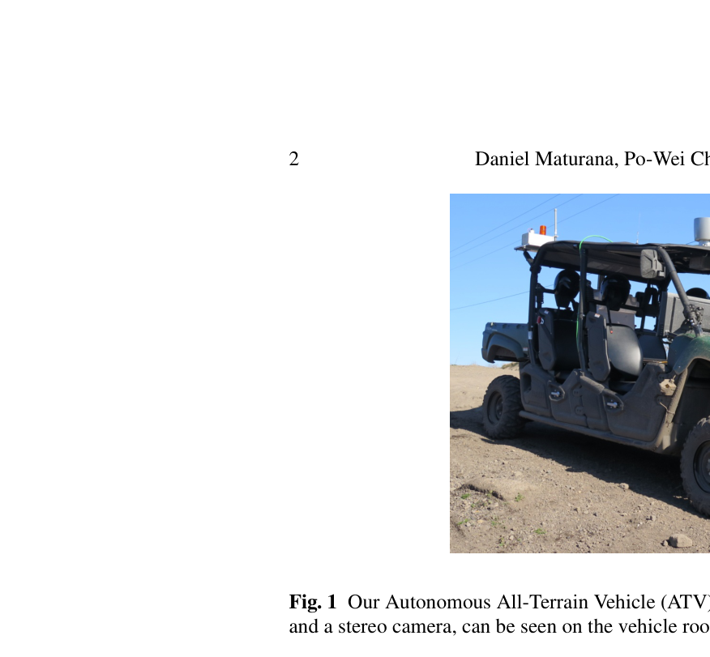
원문 Figure 1 · PDF p.2 — Fig. 1 Our Autonomous All-Terrain Vehicle (ATV). The two main sensors, a spinning 3D LiDAR and a stereo camera, can be seen on the vehicle roof.
선행 연구의 한계
LiDAR 중심 오프로드 시스템은 풀, 낙엽, 웅덩이처럼 기하와 주행 가능성이 일치하지 않는 대상을 안정적으로 구분하지 못한다.
UpNet 계열은 여러 모달리티에서 높은 분할 성능을 보였지만, metric map을 만들거나 폐루프 자율주행으로 연결하지 않았다.
당시 고정확도 의미분할망은 속도보다 정확도에 최적화되어, 차량 온보드 GPU와 실시간 지도 갱신에 그대로 쓰기 어려웠다.
LiDAR 높이·자유공간과 픽셀별 softmax 확률을 2.5D 스크롤링 격자에 시간 누적하는 의미 지도 시스템을 구현했다.
의미 클래스별 보상을 쓰는 단순 재계획기로 폐루프 ATV 주행을 시연해, 인식 결과가 실제 행동을 개선함을 보였다.
4개 지역·3개 계절에서 수집한 1,076장 YCOR 데이터셋과 학습 모델·코드의 공개 계획을 제시했다.
2.방법론 및 시스템 구성
시스템은 RGB와 LiDAR를 병렬로 처리한다. RGB 프레임은 FCN을 거쳐 각 픽셀의 K개 클래스 softmax 확률이 되고, LiDAR 점군은 Bresenham 3D ray tracing을 통해 셀의 점유·자유공간과 최소·최대 높이를 갱신한다. 카메라-라이다 외부 파라미터와 카메라 내부 파라미터를 이용해 의미 예측을 같은 격자 셀에 투영한다.
지도는 차량을 중심으로 움직이는 0.25 m 해상도 400×400 격자다. 2차원 원형 버퍼를 사용해 차량이 이동할 때 데이터를 복사하지 않고 경계 인덱스만 옮긴다. 각 셀에는 클래스별 log-odds 누적값을 유지하고 최댓값 클래스를 외부 모듈에 제공한다. 갱신 지도는 30개 정속 후보 궤적을 평가하는 receding-horizon planner로 전달되며 전체 루프는 10 Hz로 동작한다.
처리 파이프라인
1
RGB 의미분할
300×300 dark-fcn 또는 227×227 cnns-fcn이 영상 전체를 한 번에 분류한다. pooling으로 낮아진 해상도는 deconvolution으로 복원하고, FCN의 공간 문맥이 픽셀 예측을 자연스럽게 평활화한다.
2
LiDAR 기하 갱신
64선 LiDAR의 각 ray를 3D Bresenham 알고리즘으로 추적한다. ray가 지나거나 그 위에 놓인 셀은 비어 있다고 보고, beam 종점과 그 아래 셀은 점유로 처리해 셀별 최소·최대 높이를 계속 갱신한다.
3
의미의 metric 투영
카메라-라이다 상대 자세와 카메라 내부 파라미터로 픽셀 softmax를 LiDAR가 정의한 2.5D 셀에 대응시킨다. 단일 프레임의 argmax를 즉시 확정하지 않고 클래스별 log-odds를 누적해 시간적으로 융합한다.
4
로봇 중심 스크롤링
400×400 지도의 중심을 차량과 함께 이동시키되 원형 버퍼 인덱스만 변경한다. 겹치는 영역은 보존하고 새로 들어온 경계만 초기화하므로, 넓은 세계지도를 복사하지 않고도 100 m×100 m의 국소 문맥을 유지한다.
5
의미 비용 경로 선택
9 km/h 정속에서 -15°/s부터 15°/s까지 1°/s 간격의 30개 yaw-rate 궤적을 평가한다. 20 m 전방에서 smooth/rough trail은 1, grass는 0.1, 나머지는 0의 보상을 받고, 차폭을 반영한 7개 평행 이동 궤적의 셀 보상을 합산한다.
원문 수식과 의미
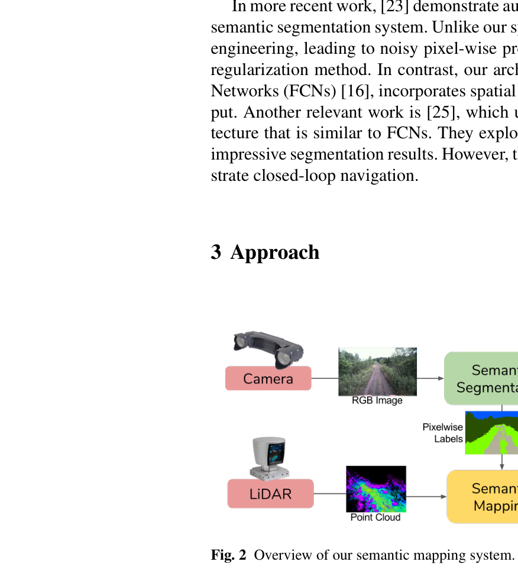
원문 Figure 2 · PDF p.3 — Fig. 2 Overview of our semantic mapping system.
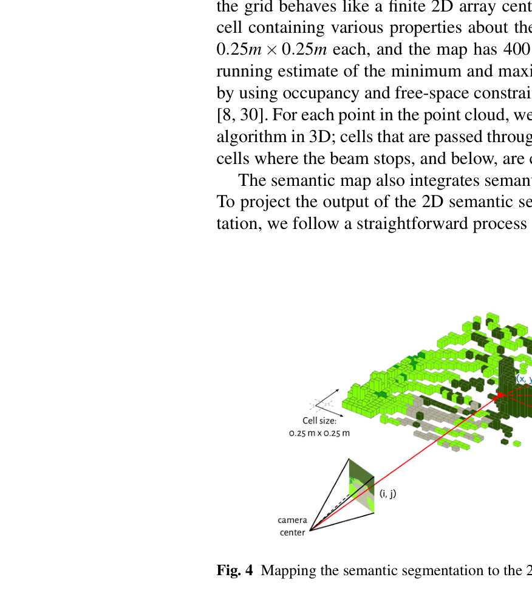
원문 Figure 4 · PDF p.6 — Fig. 4 Mapping the semantic segmentation to the 2.5D map.
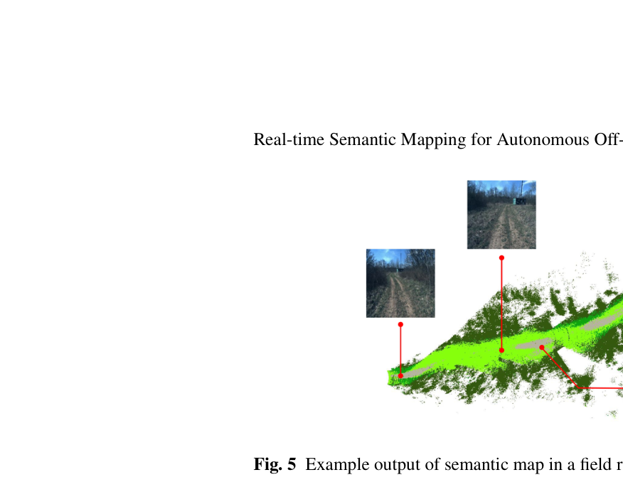
원문 Figure 5 · PDF p.7 — Fig. 5 Example output of semantic map in a field run.
3.핵심 기술
정확도-지연 균형을 맞춘 두 FCN
cnns-fcn은 VGG-CNN 계열의 227×227 입력·109×109 출력 모델이고, dark-fcn은 Darknet 계열의 300×300 입출력 모델이다. GT980M에서 각각 37 ms와 21 ms로 온보드 실행 가능성을 확보했다.
학습은 pixel-wise cross entropy와 L2 0.0005를 사용하고, 초기 learning rate 0.0001을 수렴 과정에서 세 차례 10분의 1로 낮춘다. crop·rotation·color augmentation을 적용했으며 GT980Ti에서 약 이틀이 걸렸다.
YCOR의 8개 클래스와 DeepScene의 6개 범주를 각각 평가
희소 장애물·웅덩이 클래스의 불균형이 mIoU를 크게 악화
448×448 입력은 정확도를 조금 높이지만 기본 실시간 설정과 별도
기하와 의미를 함께 누적하는 2.5D 셀
각 셀은 LiDAR ray로 얻은 최소·최대 높이와 K개 의미 클래스의 누적 신뢰도를 함께 가진다. 의미는 hard label 투표가 아니라 softmax 확률의 log-odds 합으로 누적되므로 한 프레임의 오인식 영향을 줄인다. 다만 최종 인터페이스는 argmax 한 클래스로 단순화되어 셀 하나에 여러 재질이나 경계가 공존하는 경우를 표현하지 못한다.
셀 크기 0.25 m×0.25 m
지도 크기 400×400 셀
고가 구조물·터널 같은 복수 높이 표면에는 2.5D 표현이 취약
분할 결과를 행동으로 검증하는 단순 계획기
계획기는 복잡한 동역학 최적화 대신 고정 속도·고정 곡률 후보 라이브러리를 사용한다. 이 단순성 때문에 주행 결과의 차이를 의미 지도 품질과 직접 연결해 볼 수 있다. 좁은 trail 근처의 grass를 장애물이 아니라 낮은 비용의 통과 가능 영역으로 해석해, LiDAR-only 시스템이 실패했던 구간을 통과했다.
지도 갱신마다 30개 후보 중 최대 보상 선택
차폭은 중심선 하나가 아니라 7개 shifted trajectory로 평가
별도 proprietary deliberative planner에도 의미 지도를 보조 입력으로 제공
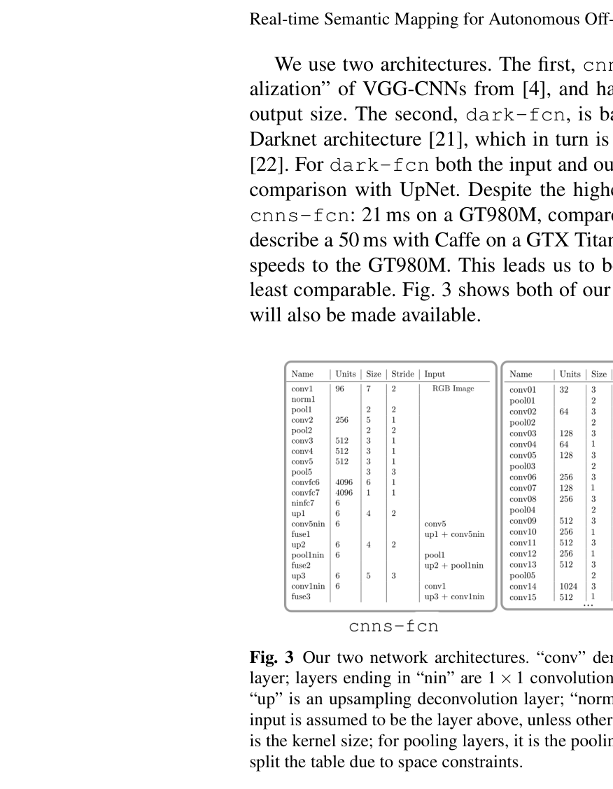
원문 Figure 3 · PDF p.5 — Fig. 3 Our two network architectures. “conv” denotes a convolutional layer; “pool”, a pooling layer; layers ending in “nin” are 1 × 1 convolutional layers; “fuse” is an elementwise sum layer; “up” is an upsampling deconvolution layer; “norm” is a local response normalization layer. The input is assumed to be the layer above, unless otherwise specified. For convolutional layers, “size” is the kernel size; for pooling layers, it is the pooling receptive field. Note that for dark-fcn we split the table due to space constraints.
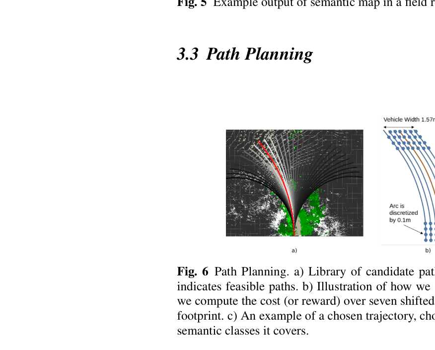
원문 Figure 6 · PDF p.7 — Fig. 6 Path Planning. a) Library of candidate paths, overlaid on top of the semantic map. Red indicates feasible paths. b) Illustration of how we account for vehicle width. For each trajectory, we compute the cost (or reward) over seven shifted versions of the trajectory, covering the vehicle footprint. c) An example of a chosen trajectory, chosen according to the traversability score of the semantic classes it covers.
4.실험 결과
실험 환경·장비·데이터
상용 ATV 개조 플랫폼에 INS/GPS, 64-line Velodyne LiDAR, 21 cm baseline RGB stereo camera를 탑재했으며 stereo depth는 사용하지 않았다.
의미 지도 노트북은 i7 CPU와 6 GB NVIDIA GT980M GPU를 사용했고, Ubuntu·ROS·C++/Python·CUDA(Theano)로 온보드 실행했다.
DeepScene은 233장 학습·139장 검증 영상, YCOR은 4개 지역·3개 계절의 1,076장으로 구성되며 931장 학습·145장 검증 split을 사용했다.
현장 주행은 2017년 3월과 7월 Pittsburgh 인근에서 급경사, 바위·진흙, 웅덩이, 다양한 높이의 식생과 좁은 trail을 포함해 수행했다.
실험 프로토콜
두 데이터셋에서 모델을 scratch부터 수렴할 때까지 학습하고 test-time augmentation 없이 클래스별 IoU, mIoU, frequency-weighted IoU를 측정했다.
폐루프 시험에서는 의미 지도를 10 Hz로 갱신하며 9 km/h 명목 속도로 20 m 후보 궤적을 반복 선택했다.
단순 receding-horizon planner의 주행 사례와, 의미 지도를 추가 입력으로 쓴 proprietary deliberative planner의 100 km 초과 시험을 별도로 관찰했다.
비교 기준
DeepScene RGB UpNet
cnns-fcn
dark-fcn
dark-fcn-448
이전 LiDAR-only navigation system
평가 지표
클래스별 intersection over union
mean IoU
frequency-weighted IoU
영상 분할·라벨 투영 지연
지도 갱신 주파수
폐루프 주행의 개입·이탈 사례
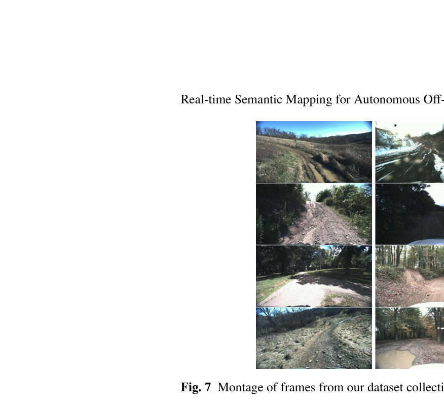
원문 Figure 7 · PDF p.9 — Fig. 7 Montage of frames from our dataset collection.
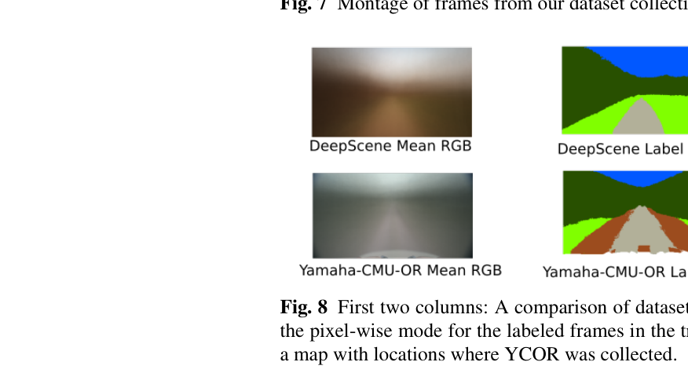
원문 Figure 8 · PDF p.9 — Fig. 8 First two columns: A comparison of dataset statistics. We show the mean RGB frame and the pixel-wise mode for the labeled frames in the training sets of each dataset used. Last column: a map with locations where YCOR was collected.
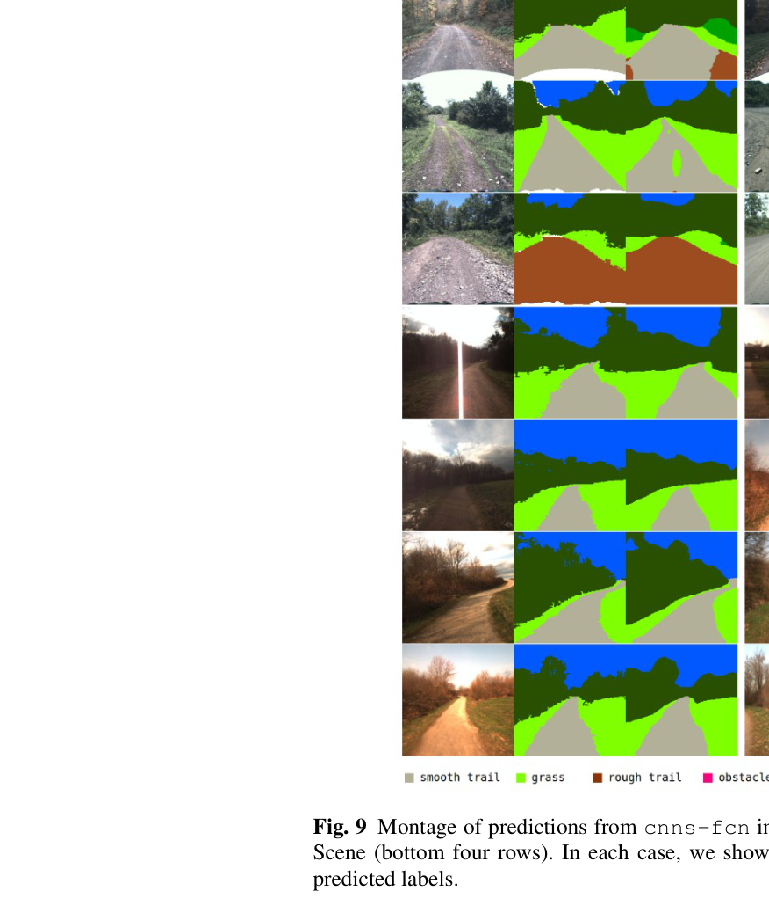
원문 Figure 9 · PDF p.11 — Fig. 9 Montage of predictions from cnns-fcn in the YCOR dataset (top four rows) and Deep- Scene (bottom four rows). In each case, we show three images: input, ground truth labels, and predicted labels.
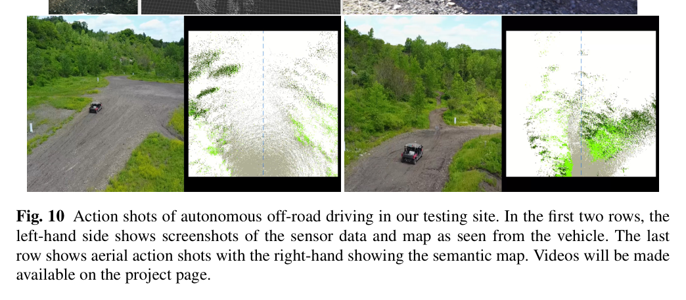
원문 Figure 10 · PDF p.12 — Fig. 10 Action shots of autonomous off-road driving in our testing site. In the first two rows, the left-hand side shows screenshots of the sensor data and map as seen from the vehicle. The last row shows aerial action shots with the right-hand showing the semantic map. Videos will be made available on the project page.
핵심 결과 해석
DeepScene에서 dark-fcn은 fw-IoU 89.41로 UpNet RGB의 85.30을 넘었지만 mIoU는 60.35로 UpNet 79.68보다 낮았다. 원인은 장애물 픽셀이 다른 클래스보다 세 자릿수 규모로 적어 obstacle IoU가 5.03에 그친 점이다. YCOR에서도 dark-fcn-448이 mIoU 49.82와 fw-IoU 65.18로 가장 높았으나 puddle IoU는 모든 모델에서 0이었다. 평균 점수만 보면 실시간 모델은 경쟁력 있지만, 안전에 중요한 희소 클래스는 해결되지 않았다.
현장에서는 LiDAR-only 시스템이 어려워했던 웅덩이, trail 중앙의 풀, 좁은 길을 여러 차례 통과했다. 그러나 넓은 길에서 단순 계획기가 좌우로 흔들렸고, sparse grass를 놓쳐 trail을 벗어나거나 큰 비주행 bush를 grass로 오인해 수동 개입한 사례가 있었다. 명목 9 km/h에서는 동작했지만 12 km/h를 넘으면 지도가 제때 갱신되지 않아 대응 실패가 나타났다. proprietary planner를 쓴 100 km 초과 시험은 훨씬 안정적이었다.
실시간 파이프라인의 실제 병목은 CNN보다 지도 ray tracing과 투영이었다. 온보드 측정에서 의미분할은 약 35 ms, label projection은 약 60 ms가 순차 실행되어 전체가 약 10 Hz가 됐다. 따라서 더 빠른 CNN만으로는 고속 주행 한계를 풀 수 없고, LiDAR ray 처리와 의미 투영의 병렬화·최적화가 함께 필요하다.
정량 결과
평가 항목
정량 결과
조건·맥락
원문 근거
DeepScene dark-fcn frequency-weighted IoU
89.41
300×300 입력; UpNet RGB 85.30과 비교
PDF p.10
DeepScene dark-fcn obstacle IoU
5.03
희소 obstacle pixel 때문에 평균 성능과 안전 클래스 성능이 괴리
PDF p.10
YCOR dark-fcn-448 mIoU / fw-IoU
49.82 / 65.18
448×448 입력, 세 모델 중 최고
PDF p.10
실시간 처리 지연
semantic segmentation 약 35 ms + label projection 약 60 ms
i7·6 GB GT980M 온보드, 순차 처리로 약 10 Hz
PDF p.12
고속 열화 임계 관찰
12 km/h 초과에서 간헐적 지도 갱신 지연
명목 속도 9 km/h 현장 주행
PDF p.12
확장 현장 시험 거리
100 km 초과
proprietary deliberative planner에 의미 지도를 추가 입력
PDF p.12
실패 사례와 경계조건
희소 grass를 놓쳐 차량이 trail 바깥으로 벗어났다.
큰 비주행 bush를 traversable grass로 분류해 수동 개입이 필요했다.
DeepScene obstacle과 YCOR puddle처럼 픽셀 수가 적은 클래스의 IoU가 매우 낮거나 0이었다.
단순 receding-horizon planner가 넓은 trail에서 좌우로 흔들렸고, 12 km/h 이상에서는 10 Hz 지도가 행동 결정보다 늦었다.
5.한계 및 향후 연구
현재 한계
YCOR은 1,076장으로 Cityscapes 25,000장보다 작고, train/validation 사이에 수집 session은 겹치지 않지만 위치는 겹쳐 장소 일반화가 엄격히 분리되지 않았다.
클래스 불균형으로 안전에 중요한 obstacle·puddle 인식이 약하며 실제 bush 오인식이 수동 개입으로 이어졌다.
2.5D 셀은 하나의 높이와 하나의 argmax 클래스를 가정하므로 overhang, tunnel, 경계의 복수 재질을 표현하기 어렵다.
semantic mapping의 ray tracing과 projection이 약 95 ms를 차지해 10 Hz에 묶이고, 12 km/h 이상에서 반응성이 부족했다.
향후 연구
dilated convolution과 spatial pyramid pooling을 도입해 다중 스케일 문맥과 희소 클래스의 경계를 보강한다.
RGB만이 아니라 LiDAR와 영상을 함께 쓰는 multimodal segmentation을 평가해 조명·계절 변화에 대한 강건성을 높인다.
대규모 수동 라벨링 대신 self-supervision과 inverse reinforcement learning으로 주행 경험에서 의미를 학습한다.
6.한마디로 정리
핵심 방법은?
경량 FCN의 픽셀 softmax를 LiDAR 기반 2.5D 스크롤링 격자에 log-odds로 누적하고, 의미 클래스 비용으로 정속 후보 궤적을 고른다.
핵심 결과는?
분할 지표는 당시 방법과 경쟁적이었고 LiDAR-only가 실패한 좁은 길·풀·웅덩이 구간을 폐루프로 통과했으며, 확장 계획기에서는 100 km 이상 운용했다.
한계는?
희소 장애물·웅덩이 클래스와 단일 클래스 2.5D 표현, 10 Hz 투영 병목 때문에 고속·미지 계절의 안전성을 보장하지 못한다.
#환경인식#측위·매핑#작업·궤적계획#경량 FCN 의미분할#RGB-LiDAR 융합#의미 비용 경로계획
나의 의견 / 우리 연구와의 연관성
자율굴착 현장에서도 같은 높이의 흙더미, 통과 가능한 느슨한 토사, 단단한 암석, 물웅덩이는 기하만으로 작업 위험을 구분하기 어렵다. 이 논문의 핵심 연결점은 의미를 별도 장식 정보가 아니라 경로 비용으로 바로 소비하는 구조다. 굴착기에는 이동 비용뿐 아니라 버킷 관입 가능성, 붐 충돌 위험, 덤프 가능 구역을 다층 셀로 연결할 수 있다.
다만 원 논문의 수동 RGB 라벨과 고정 클래스 체계를 그대로 옮기기보다, 굴착 중 관절 압력·슬립·작업 성공을 약한 감독 신호로 써 계절·먼지·지형 변화에 적응시키는 것이 중요하다. 10 Hz 병목도 더 무겁고 제동거리가 긴 장비에서는 속도 한계보다 안전 정지 거리와 함께 설계해야 한다.
LiDAR 높이 셀에 토질, 주행 가능성, 버킷 관입 가능성, 작업 완료도를 의미 layer로 누적하는 현장 지도 구조로 확장할 수 있다.
차폭을 7개 평행 궤적으로 평가한 발상은 굴착기의 track footprint와 후방 counterweight sweep를 함께 검사하는 비용 계산으로 바꿀 수 있다.
큰 bush를 grass로 오인한 실패는 사람·장비·암석 같은 희소 안전 클래스를 class-balanced loss와 보수적 unknown 비용으로 처리해야 함을 보여준다.
7.전체 그림·표
본문 핵심 위치에 배치하지 않은 원문 Figure와 Table을 원문 페이지 순서로 수록한다.
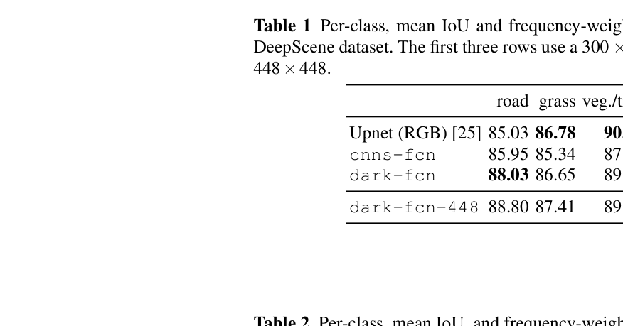
원문 Table 1 · PDF p.10 — Table 1 Per-class, mean IoU and frequency-weighted IoU of UpNet (RGB) and our models in DeepScene dataset. The first three rows use a 300 × 300 image size, as in UpNet; the last row uses 448×448.
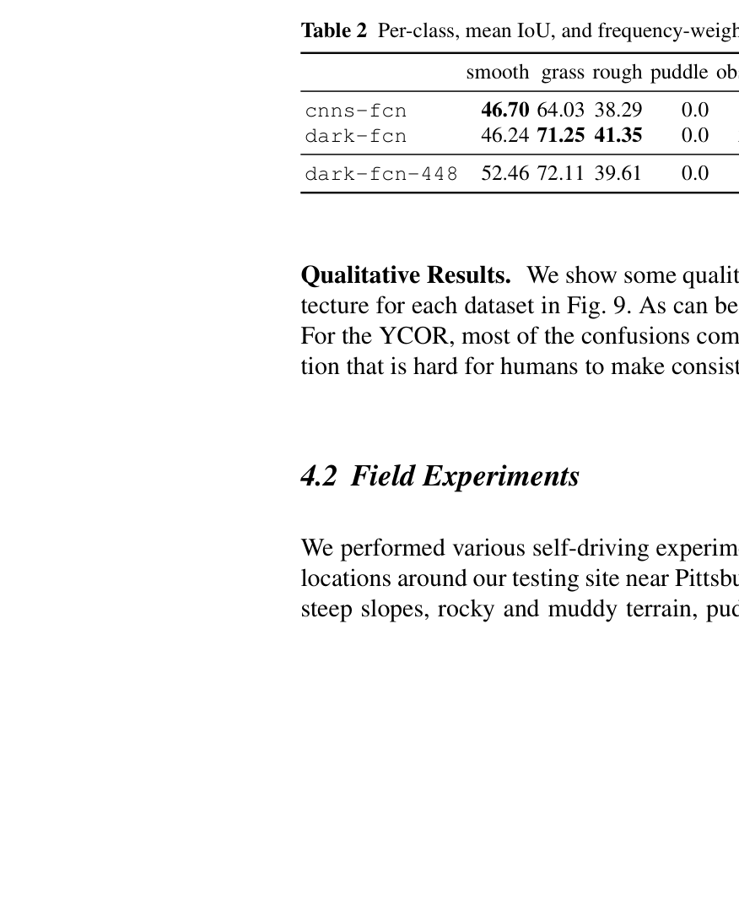
원문 Table 2 · PDF p.10 — Table 2 Per-class, mean IoU, and frequency-weighed IoU of our models in the YCOR dataset.